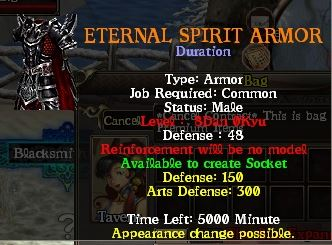
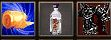
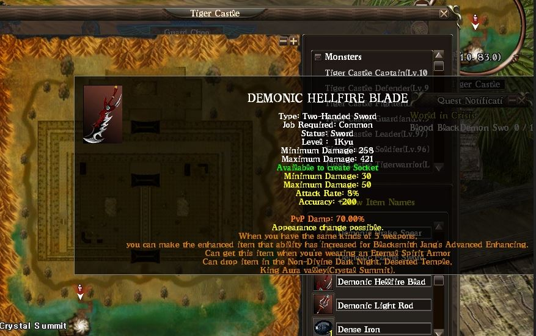

Passo a Passo
Introdução

Para obter um item Único, você precisa fazer e usar uma Armadura Espiritual Eterna primeiro.
Passo 1 — Eternal Spirit Armor

※ Observe que há um limite de tempo para a Eternal Spirit Armor! Mas você pode fazê-la novamente após o tempo expirar.
Passo 2 — Materiais

※ Como obter Gold Sand / Pure Stone Liquid? Para obter esses itens basta matar monstros em mapas específicos. O mapa Castelo do Tigre possui os 2 materiais necessários.
Drop de Itens Únicos (Raros)

※ Finalmente suas chances aumentaram! Você receberá um item exclusivo após usar a Eternal Spirit Armor.